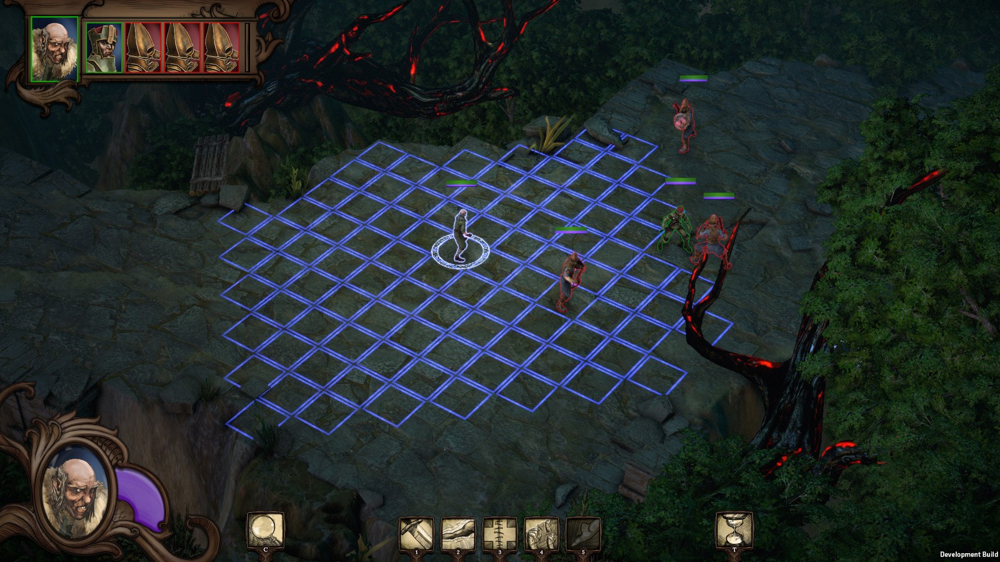
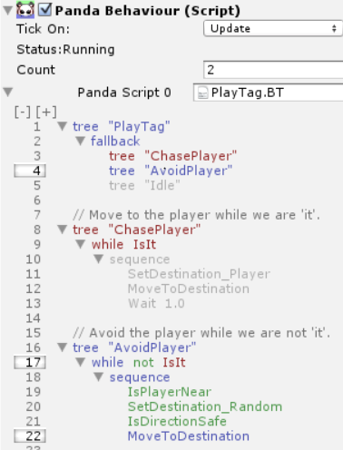

Scarlet Republics is a tactical turn-based fantasy RPG inspired by the Renaissance and Leonardo da Vinci's imagination.
Position: Gameplay Programmer
Duration: 2 years
Developer: Audacity Interactive
Engine: Unity
I worked as a gameplay programmer on this Unity game for more than a year leading up to it's initial vertical slice and for some time afterwards. The game has since gone through a successful Kickstarter campaign, but development has stopped. A table top RPG set in the games fantasy world is being developed instead.
While working on the game, I was responsible for gameplay and AI design and implementation for various enemies. I worked on pathfinding algorithms and on implementing a behavior tree system. I designed the enemies to create interesting combat encounters where each of the player's characters could stand out. I worked iteratively by repeatedly creating prototypes and playtesting.
I also designed the UX for the game's combat encounters and ran frequent playtests to ensure the UI was simple to use and that all the relevant information was readily available to the player.
Lastly I made several VFX shaders such a cross-hatch shader for 3D models and a tile shader for the battlemap.
Because of company's small size, I was given a large amount of responsibility and was expected to work effectively with coworkers in other disciplines to create features that aligned with our common vision for the game and it's atmospheric world.
In the pictures you can see an example of a behavior tree, a screenshot of the in-game combat and the cross-hatch shader in action.
The video shows off our unique fantasy world. You can also see the UI and UX and how it dictates the flow of combat, and the cross-hatching shader I built affecting the 3D models.

